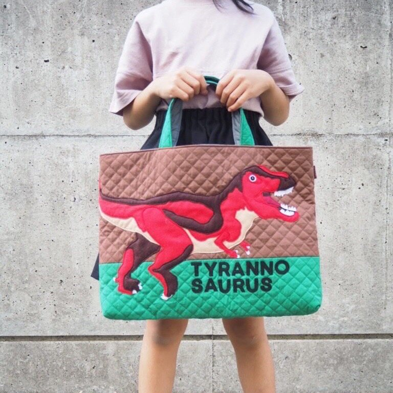
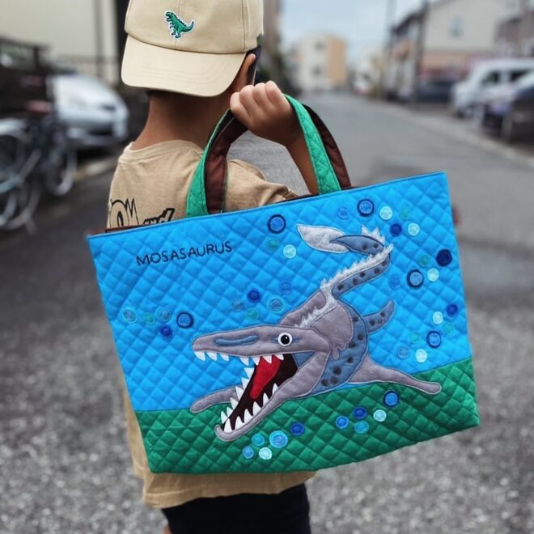
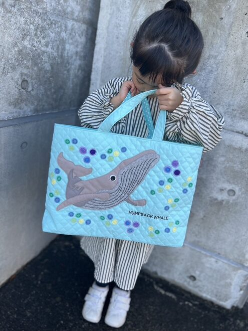

マキナツについて
大好きな生き物を、
毎日持てるかたちに。
恐竜、海の生き物、昆虫。
図鑑を開くたびに会いたくなる生き物たちを、アップリケのバッグにしています。

01 ／ はじまり
一枚の恐竜バッグから
幼稚園に通うのがあまり好きではなかった息子に、「少しでも楽しく通えたら」と、大好きな恐竜のレッスンバッグを作りました。
しばらくしたある日、先生が、息子が園でこんなふうに話していたと教えてくれました。
「僕のお母さんってね、ミシンが上手なんだよねぇ」
私が作ったバッグが、息子の会話のきっかけになっていたんです。そのことがうれしくて、同じように生き物が大好きなお子さんにも届けたいと思いました。それが、マキナツの始まりです。
02 ／ 作品づくり
リアルだけど、かわいい
- 図鑑や写真を見ながら
- その生き物らしさが伝わるように、体のかたちや特徴をよく見て描きます。
- 今にも動き出しそうに
- アップリケの角度や配置を調整して、泳ぐ姿や走る姿を表現します。海の生き物には、泡や水しぶきで動きを添えることも。
- 瞳には、小さな光を
- 大好きな生き物が友だちのように感じられるよう、親しみやすい表情に仕上げています。


03 ／ 作り手
マキナツ
鳥取を拠点に、生き物のアップリケバッグを制作しています。「こんなの探してた！」と思ってもらえるような、ちょっと珍しい生き物も作っています。
主な活動・掲載歴
- 2012年 ネットでハンドメイド作品の販売を開始
- 2016年 クリエーターズマーケット名古屋に出展
- 2018年 minneハンドメイドアワードのベビーキッズ部門にノミネート。白泉社『kodomoe』2月号で作品紹介
- 2020年 TBS系『パパジャニWEST』でバショウカジキのレッスンバッグの画像が紹介される
- 2022〜2024年 鳥取市の gallery shop SORA で特集展示
- 2023年 デザインフェスタ58に出展
- 2024年 BSSテレポート山陰で紹介。ラフォーレ原宿「愛と狂気のマーケット」に出展
- 2025年2〜3月 gallery shop SORA の特集展示「鞄展」に参加
- 2025年12月〜2026年3月 TSUTAYAハンドメイドマーケットで委託販売
- 2026年6月 きららハンドメイドマーケットinよなごに出展
- 2026年9月 週末だけのまちのみせに出展
- 2026年11月 下関グランマーケットに出展予定
お気に入りの生き物を探す
カタログでは、生き物とバッグの色を組み合わせて、できあがりのイメージを楽しめます。